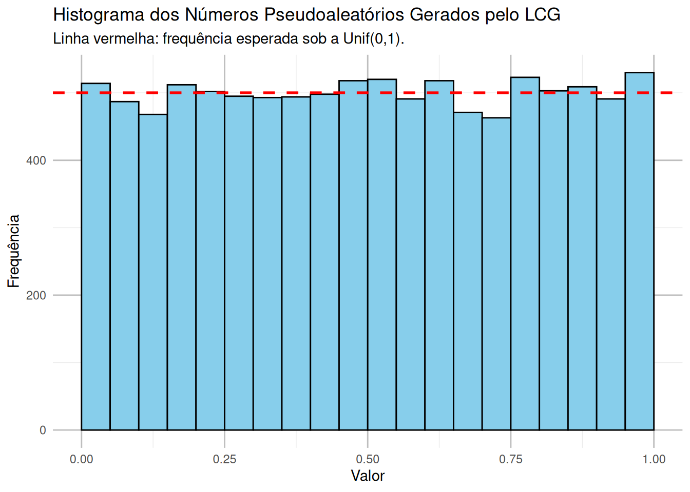
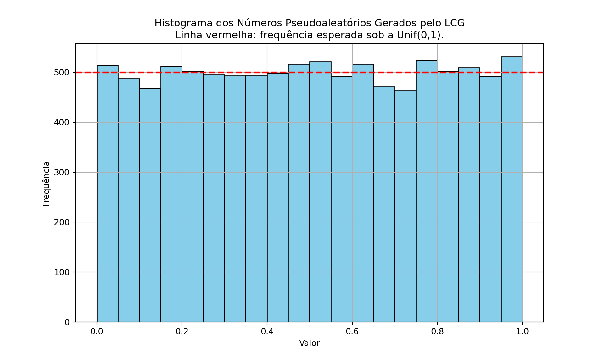
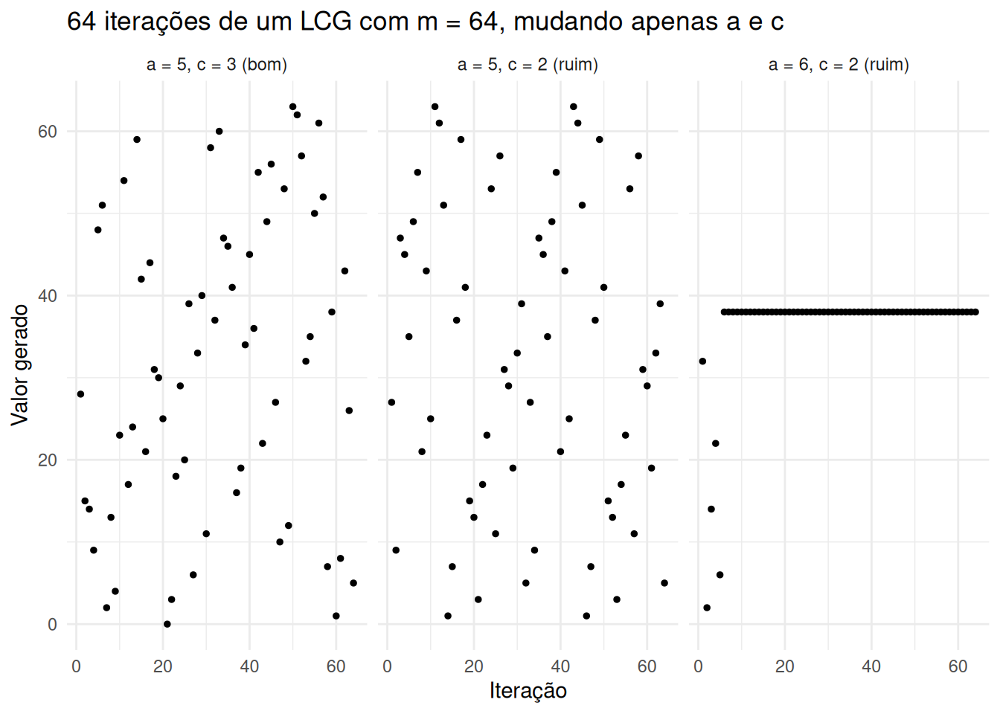
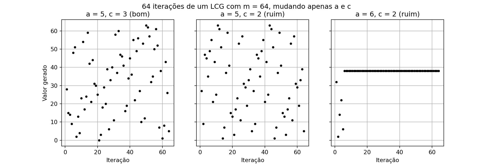
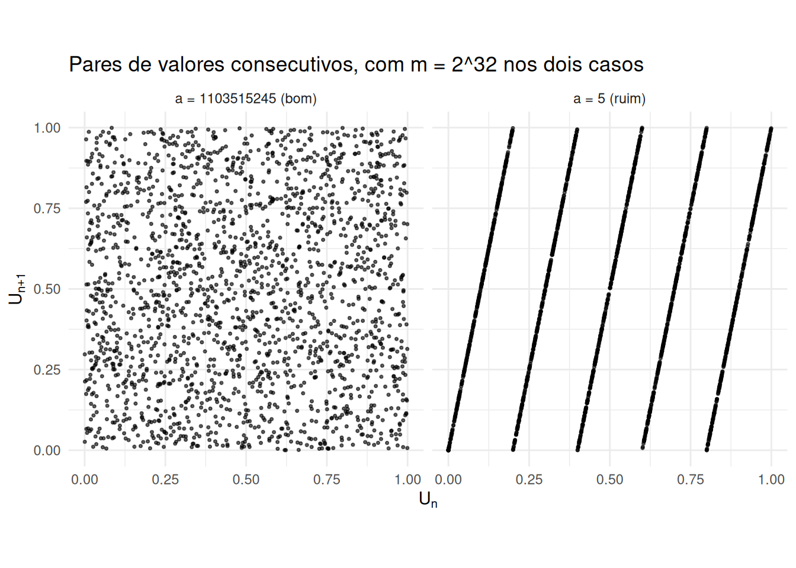
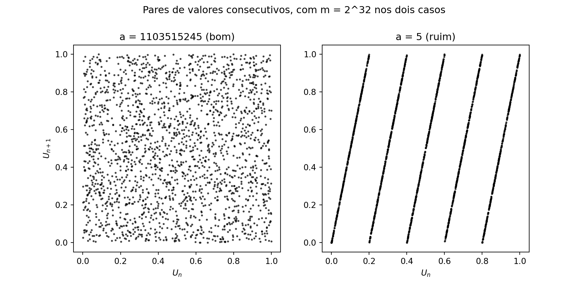
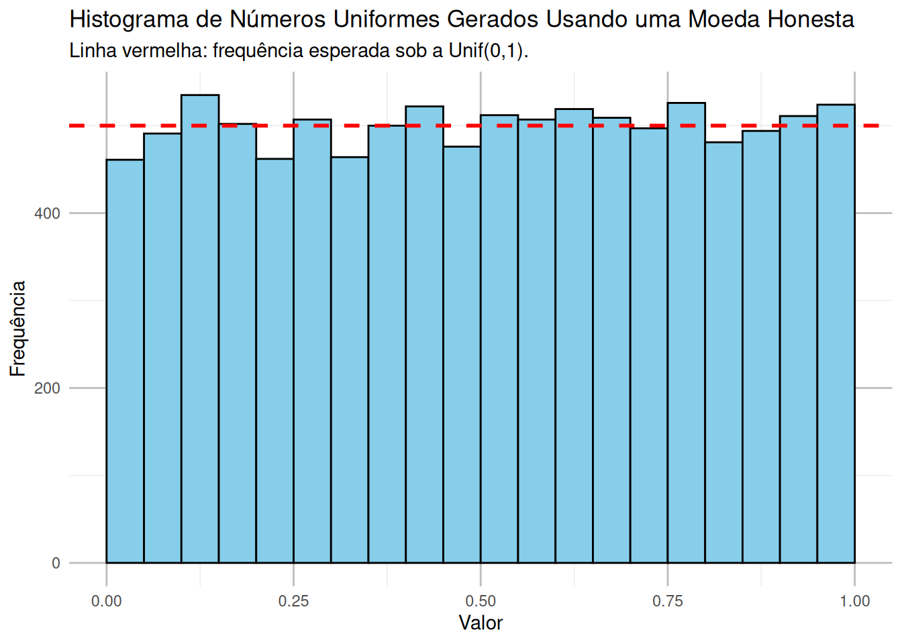
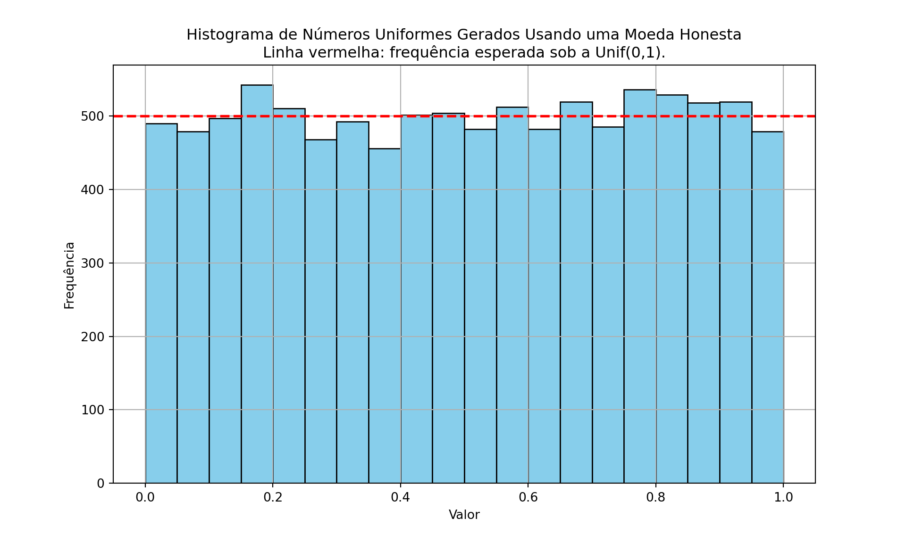

No capítulo anterior, todos os exemplos começavam sorteando números uniformes em \([0,1)\) — com runif no R e np.random.uniform no Python — e a partir deles construímos tudo o mais. Ficou pendente a pergunta de onde esses números uniformes vêm.
Números aleatórios têm muitas aplicações na computação, como em simulações, amostragem estatística, criptografia e jogos de azar. No entanto, os computadores, por serem sistemas determinísticos, não podem gerar números realmente aleatórios de forma autônoma. Em vez disso, utilizam algoritmos determinísticos que geram números que parecem aleatórios, e esses números são chamados de pseudoaleatórios.
Este capítulo trata de como um desses algoritmos funciona. Ele é a base de todo o resto do livro: os capítulos seguintes transformam uniformes em outras distribuições, e todos supõem que sabemos produzir uniformes.
Definição: número pseudoaleatório
Um número pseudoaleatório é gerado a partir de uma fórmula matemática que, dada uma semente (um valor inicial), produz uma sequência de números com as propriedades desejadas de uma sequência aleatória. Essa sequência parece aleatória, mas é inteiramente determinada pela semente: se a mesma semente for usada, a sequência será exatamente a mesma.
É justamente por isso que set.seed e np.random.seed funcionam. Fixar a semente não torna a simulação “menos aleatória”; apenas permite que outra pessoa rode o mesmo código e obtenha os mesmos números.
2.1 O Gerador Linear Congruente (LCG)
O Gerador Linear Congruente (LCG) é um dos métodos mais antigos e simples para gerar números pseudoaleatórios (veja o verbete na Wikipédia). Ele parte de uma semente \(X_0\) e produz os valores seguintes pela fórmula
\[
X_{n+1} = (a \cdot X_n + c) \mod m,
\]
onde:
\(X_n\) é o número gerado na \(n\)-ésima iteração (e \(X_0\) é a semente inicial),
\(a\) é o multiplicador,
\(c\) é o incremento,
\(m\) é o módulo.
Como o resto da divisão por \(m\) está sempre entre \(0\) e \(m-1\), todo \(X_n\) é um inteiro nesse intervalo. Mas o que queremos são números em \([0,1)\): para isso, basta dividir por \(m\),
\[
U_n = \frac{X_n}{m}.
\]
Pseudo-algoritmo: LCG
Entradas: os parâmetros \(a\), \(c\), \(m\) e a semente \(X_0\).
Faça \(X \leftarrow X_0\).
Repita, a cada vez que um novo número for pedido:
Atualize \(X \leftarrow (a \cdot X + c) \mod m\);
Devolva \(U = X/m\).
Note que o gerador guarda o valor de \(X\) entre uma chamada e a seguinte: cada número novo é calculado a partir do anterior. Toda a sequência fica, portanto, determinada por \(a\), \(c\), \(m\) e \(X_0\). Um conjunto mal escolhido desses parâmetros pode produzir uma sequência que se repete muito rapidamente, o que compromete a qualidade do gerador — voltaremos a esse ponto na seção Escolhendo os parâmetros.
2.1.1 A função módulo
O único ingrediente novo da fórmula é a operação de resto.
Definição: função módulo
A função módulo (também conhecida como operação de resto) retorna o resto da divisão de um número por outro. Para inteiros \(y\) e \(m > 0\),
\[
r = y \mod m,
\]
onde \(y\) é o dividendo, \(m\) é o divisor e \(r\) é o resto da divisão de \(y\) por \(m\). Vale sempre \(r \in \{0, 1, \ldots, m-1\}\).
Por exemplo, a divisão de 17 por 5 dá quociente 3 e resto 2, então
\[
17 \mod 5 = 2.
\]
No contexto do LCG, é a função módulo que garante que os números gerados fiquem dentro do intervalo \(\{0, 1, \ldots, m-1\}\).
# Exemplo de uso da função módulo em R# Definindo os valoresdividendo <-17divisor <-5# Calculando o resto da divisão (em R, o operador de módulo é %%)resto <- dividendo %% divisor# Exibindo o resultadocat("O resto da divisão de", dividendo, "por", divisor, "é:", resto, "\n")
O resto da divisão de 17 por 5 é: 2
Mostrar código
# Exemplo de uso da função módulo em Python# Definindo os valoresdividendo =17divisor =5# Calculando o resto da divisão (em Python, o operador de módulo é %)resto = dividendo % divisor# Exibindo o resultadoprint(f"O resto da divisão de {dividendo} por {divisor} é: {resto}")
O resto da divisão de 17 por 5 é: 2
Atenção: operadores diferentes nas duas linguagens
O operador de módulo é %% no R e % no Python. Cuidado também com ^: no R ele é a exponenciação (2^32 vale \(2^{32}\)), mas em Python ^ é o XOR bit a bit — lá a exponenciação se escreve 2**32. Escrever 2^32 em Python não gera erro, apenas devolve silenciosamente o número errado (34).
2.2 Exemplo 1: implementando o LCG
Vamos implementar o pseudo-algoritmo acima e usá-lo para gerar 10 000 números. Como parâmetros, adotamos
\(m = 2^{32}\) (módulo com 32 bits),
\(a = 1103515245\) (multiplicador),
\(c = 12345\) (incremento),
\(X_0 = 5\) (semente inicial, que pode ser qualquer valor).
O multiplicador e o incremento são os do gerador sugerido no padrão da linguagem C (que usa \(m = 2^{31}\); aqui tomamos \(m = 2^{32}\)). Eles não foram escolhidos ao acaso: satisfazem as condições matemáticas que garantem o período mais longo possível, como verificaremos na próxima seção.
Se o gerador funcionar bem, os 10 000 valores devem se espalhar de maneira aproximadamente uniforme em \([0,1)\) — isto é, o histograma deve ter barras de alturas parecidas.
# Carregando os pacoteslibrary(ggplot2)library(gmp) # inteiros de precisão arbitrária# Classe para o Gerador Congruente Linear.# Usamos setRefClass porque o gerador precisa *lembrar* o último valor de X# entre uma chamada e a seguinte: cada objeto criado guarda a sua própria# semente, que é atualizada a cada chamada de gerar().## Atenção: a * semente chega a valores da ordem de 4.7e18, muito além dos# 2^53 que um "numeric" do R representa exatamente. Por isso guardamos os# parâmetros como inteiros grandes (bigz) do pacote gmp: sem isso, a conta# modular seria feita com arredondamento e o gerador produziria outra sequência.LinearCongruentialGenerator <-setRefClass("LinearCongruentialGenerator",fields =list(a ="ANY", c ="ANY", m ="ANY", semente ="ANY"),methods =list(initialize =function(semente, a =1103515245, c =12345, m =as.bigz(2)^32) { .self$a <-as.bigz(a) .self$c <-as.bigz(c) .self$m <-as.bigz(m) .self$semente <-as.bigz(semente) },gerar =function() {# Atualizando a semente .self$semente <- (.self$a * .self$semente + .self$c) %% .self$mreturn(as.numeric(.self$semente) /as.numeric(.self$m)) # Normalizando para [0, 1) } ))# Inicializando o gerador com uma sementelcg <- LinearCongruentialGenerator$new(semente =5)# Gerando 10000 números pseudoaleatóriosnumeros_gerados <-sapply(1:10000, function(x) lcg$gerar())# Olhando os primeiros valores da sequênciaprint(round(head(numeros_gerados, 5), 6))
[1] 0.284664 0.629045 0.162000 0.486413 0.655533
Mostrar código
# Convertendo para um data.framedados <-data.frame(numeros_gerados = numeros_gerados)# Plotando o histograma dos números geradosggplot(dados, aes(x = numeros_gerados)) +# binwidth com boundary = 0 corta o intervalo em [0; 0,05), [0,05; 0,10), ...# Sem isso, as faixas das pontas sairiam mais estreitas e pareceriam ter# menos valores do que deveriamgeom_histogram(binwidth =0.05, boundary =0,fill ='skyblue', color ='black') +# Se os valores fossem mesmo Unif(0,1), cada uma das 20 faixas receberia, em# média, 10000/20 = 500 deles: é essa a frequência marcada em vermelhogeom_hline(yintercept =length(numeros_gerados) /20, color ='red',linetype ='dashed', linewidth =1) +ggtitle('Histograma dos Números Pseudoaleatórios Gerados pelo LCG',subtitle ='Linha vermelha: frequência esperada sob a Unif(0,1).') +xlab('Valor') +ylab('Frequência') +theme_minimal() +theme(panel.grid.major =element_line(color ="grey"))

Mostrar código
import matplotlib.pyplot as pltclass LinearCongruentialGenerator:def__init__(self, semente, a=1103515245, c=12345, m=2**32):self.a = aself.c = cself.m = mself.semente = sementedef gerar(self):# Atualizando a sementeself.semente = (self.a *self.semente +self.c) %self.mreturnself.semente /self.m # Normalizando para [0, 1)# Inicializando o gerador com uma sementelcg = LinearCongruentialGenerator(semente=5)# Gerando 10000 números pseudoaleatórios# (em Python os inteiros já têm precisão arbitrária, então a conta modular é exata)numeros_gerados = [lcg.gerar() for _ inrange(10000)]# Olhando os primeiros valores da sequênciaprint([round(u, 6) for u in numeros_gerados[:5]])
[0.284664, 0.629045, 0.162, 0.486413, 0.655533]
Mostrar código
# Plotando o histograma dos números geradosplt.figure(figsize=(10, 6))plt.hist(numeros_gerados, bins=20, color='skyblue', edgecolor='black')# Se os valores fossem mesmo Unif(0,1), cada uma das 20 faixas receberia, em# média, 10000/20 = 500 deles: é essa a frequência marcada em vermelhoplt.axhline(len(numeros_gerados) /20, color='red', linestyle='--', linewidth=2)plt.title('Histograma dos Números Pseudoaleatórios Gerados pelo LCG\n''Linha vermelha: frequência esperada sob a Unif(0,1).')plt.xlabel('Valor')plt.ylabel('Frequência')plt.grid(True)plt.show()

As duas implementações produzem exatamente os mesmos cinco primeiros valores, e o histograma é compatível com uma \(\text{Unif}(0,1)\). Vale notar que ser aproximadamente uniforme é uma condição necessária, mas longe de suficiente: a sequência \(0{,}1;\ 0{,}2;\ \ldots;\ 1{,}0;\ 0{,}1;\ 0{,}2;\ \ldots\) também produz um histograma perfeitamente plano e não tem nada de aleatória. É por isso que a escolha dos parâmetros importa.
2.3 Escolhendo os parâmetros
A eficácia do LCG se baseia num bom equilíbrio entre a escolha dos parâmetros e as propriedades matemáticas que garantem uma sequência suficientemente “aleatória”. Antes de ver as condições, vale entender o que cada parâmetro faz.
Módulo \(m\): define o intervalo no qual os números gerados estarão contidos, \(\{0, 1, \ldots, m-1\}\). Em muitos casos, \(m\) é escolhido como uma potência de 2 (por exemplo, \(m = 2^{32}\) ou \(m = 2^{64}\)) porque cálculos modulares com potências de 2 são mais rápidos em hardware. O valor de \(m\) também limita o quão longa a sequência pode ser antes de começar a se repetir.
Multiplicador \(a\): é o parâmetro mais delicado. Se \(a\) não for bem escolhido, a sequência se repete rapidamente e passam a aparecer padrões visíveis entre valores consecutivos.
Incremento \(c\): soma um valor fixo a cada passo e é um dos fatores que permite que todos os valores em \(\{0, \ldots, m-1\}\) sejam atingidos. Quando \(c = 0\), o gerador é chamado de multiplicativo; nessa forma, o valor \(0\) é um ponto fixo (se \(X_n = 0\), todos os seguintes também serão) e o período máximo possível é menor.
Semente \(X_0\): é o valor inicial da sequência. Mudar a semente resulta numa sequência diferente, mas com o mesmo período e as mesmas propriedades determinadas pelos outros parâmetros. É a semente que garante que a simulação possa ser reproduzida: dois programas com a mesma semente e os mesmos parâmetros produzem exatamente a mesma sequência.
2.3.1 Período
Definição: período
O período de um gerador é a quantidade de números produzidos antes que a sequência comece a se repetir. Como um LCG só depende do valor atual de \(X\), e \(X\) assume no máximo \(m\) valores distintos, o período nunca pode ser maior que \(m\).
Um período curto é o pior defeito que um gerador pode ter: se ele se repete a cada 32 valores, uma simulação com 10 000 repetições está, na verdade, usando as mesmas 32 observações várias vezes. O resultado deixa de ter qualquer relação com o que se queria estimar.
A boa notícia é que existe uma caracterização exata de quando o período máximo é atingido.
Condições de Hull–Dobell
Suponha \(c \neq 0\). O LCG com parâmetros \(a\), \(c\) e \(m\) tem período máximo \(m\), qualquer que seja a semente \(X_0\), se e somente se:
\(c\) e \(m\) são coprimos, isto é, o maior divisor comum entre eles é 1: \(\text{mdc}(c, m) = 1\);
\(a - 1\) é divisível por todos os fatores primos de \(m\);
se \(m\) é divisível por 4, então \(a - 1\) também é divisível por 4.
A intuição por trás de cada condição é a seguinte. A primeira garante que, ao somar \(c\) repetidamente, todos os valores possíveis de \(X_n\) possam ser atingidos: se \(c\) e \(m\) tivessem um fator comum, as somas ficariam presas a um subconjunto dos restos, e a sequência pularia valores. A segunda e a terceira controlam o efeito da multiplicação por \(a\): elas garantem que a parte multiplicativa não introduza ciclos curtos dentro do intervalo. Quando \(m = 2^k\), seu único fator primo é 2, e as duas condições juntas se resumem a exigir que \(a - 1\) seja divisível por 4.
Vamos verificar essas condições para os parâmetros usados no Exemplo 1.
# Carregando o pacote com a função gcd (maior divisor comum)library(gmp)# Parâmetros do Exemplo 1# (evitamos chamar as variáveis de a, c e m porque, em R, "c" já é o nome# da função que concatena valores)modulo <-2^32multiplicador <-1103515245incremento <-12345# Verificando as três condições de Hull-Dobell.# Como m = 2^32, seu único fator primo é 2.condicoes <-c("c e m são coprimos"=as.logical(gcd(incremento, modulo) ==1),"a - 1 é divisível por 2"= (multiplicador -1) %%2==0,"a - 1 é divisível por 4"= (multiplicador -1) %%4==0)for (nome innames(condicoes)) {cat(nome, ":", condicoes[[nome]], "\n")}
c e m são coprimos : TRUE
a - 1 é divisível por 2 : TRUE
a - 1 é divisível por 4 : TRUE
Mostrar código
import math# Parâmetros do Exemplo 1modulo =2**32multiplicador =1103515245incremento =12345# Verificando as três condições de Hull-Dobell.# Como m = 2^32, seu único fator primo é 2.condicoes = {"c e m são coprimos": math.gcd(incremento, modulo) ==1,"a - 1 é divisível por 2": (multiplicador -1) %2==0,"a - 1 é divisível por 4": (multiplicador -1) %4==0,}for nome, vale in condicoes.items():print(nome, ":", vale)
c e m são coprimos : True
a - 1 é divisível por 2 : True
a - 1 é divisível por 4 : True
As três condições valem, de modo que o gerador do Exemplo 1 percorre todos os \(2^{32} \approx 4{,}3\) bilhões de valores possíveis antes de se repetir. Isso é mais do que suficiente para as simulações deste livro, mas modesto para os padrões atuais: geradores modernos como o Mersenne Twister — o que está por trás de runif e de np.random.uniform — têm períodos astronomicamente maiores.
O que R e Python usam de verdade
Nenhuma das duas linguagens usa um LCG. Tanto runif quanto np.random.uniform são baseados no Mersenne Twister, publicado em 1997, cujo período é \(2^{19937} - 1\) — um número com mais de seis mil algarismos. A diferença estrutural em relação ao LCG é o tamanho do estado interno: em vez de guardar um único \(X_n\), ele guarda 624 inteiros de 32 bits, e é isso que permite um período tão longo.
Você pode confirmar qual gerador está em uso com RNGkind() no R e com np.random.get_state()[0] no Python. O LCG continua valendo a pena estudar porque a ideia é exatamente a mesma — um estado que se atualiza por uma fórmula determinística, e uma semente que torna tudo reproduzível — e porque cabe em três linhas de código.
2.4 Exemplo 2: o efeito de parâmetros ruins
Para ver o que as condições de Hull–Dobell evitam, vamos comparar três geradores que diferem apenas em \(a\) e \(c\). Todos usam \(m = 64\) (pequeno, para que a repetição seja visível a olho nu) e semente \(X_0 = 5\):
Gerador
\(a\)
\(c\)
Situação
bom
5
3
satisfaz as três condições
ruim 1
5
2
viola a condição 1: \(\text{mdc}(2, 64) = 2\)
ruim 2
6
2
viola também a condição 2: \(a - 1 = 5\) é ímpar
Geramos 64 valores de cada um e contamos quantos são distintos. Como \(m = 64\), o ideal é que os 64 valores sejam todos diferentes.
library(ggplot2)# Função que devolve os n primeiros valores de um LCG.# Aqui m é pequeno, então não há risco de perda de precisão e não precisamos do gmp.# Chamar um argumento de "c" é seguro porque dentro da função não usamos a função# c() do R; fora dela, é melhor evitar esse nome (como fizemos no trecho anterior).gerar_lcg <-function(n, a, c, m, semente) { valores <-numeric(n) x <- sementefor (i in1:n) { x <- (a * x + c) %% m # mesma fórmula do pseudo-algoritmo valores[i] <- x }return(valores)}m <-64semente <-5seq_bom <-gerar_lcg(64, a =5, c =3, m = m, semente = semente)seq_ruim1 <-gerar_lcg(64, a =5, c =2, m = m, semente = semente)seq_ruim2 <-gerar_lcg(64, a =6, c =2, m = m, semente = semente)# Quantos valores distintos cada gerador produziu em 64 iterações?cat("a = 5, c = 3:", length(unique(seq_bom)), "valores distintos\n")
a = 5, c = 3: 64 valores distintos
Mostrar código
cat("a = 5, c = 2:", length(unique(seq_ruim1)), "valores distintos\n")
a = 5, c = 2: 32 valores distintos
Mostrar código
cat("a = 6, c = 2:", length(unique(seq_ruim2)), "valores distintos\n")
a = 6, c = 2: 6 valores distintos
Mostrar código
# Os primeiros valores do pior geradorcat("\nInício da sequência com a = 6, c = 2:", head(seq_ruim2, 10), "\n")
Início da sequência com a = 6, c = 2: 32 2 14 22 6 38 38 38 38 38
Mostrar código
# Visualizando as três sequências lado a ladorotulos <-c("a = 5, c = 3 (bom)", "a = 5, c = 2 (ruim)", "a = 6, c = 2 (ruim)")dados <-data.frame(iteracao =rep(1:64, times =3),valor =c(seq_bom, seq_ruim1, seq_ruim2),gerador =factor(rep(rotulos, each =64), levels = rotulos))ggplot(dados, aes(x = iteracao, y = valor)) +geom_point(size =1) +facet_wrap(~ gerador) +labs(title ="64 iterações de um LCG com m = 64, mudando apenas a e c",x ="Iteração", y ="Valor gerado") +theme_minimal()

Mostrar código
import matplotlib.pyplot as plt# Função que devolve os n primeiros valores de um LCGdef gerar_lcg(n, a, c, m, semente): valores = [] x = sementefor i inrange(n): x = (a * x + c) % m # mesma fórmula do pseudo-algoritmo valores.append(x)return valoresm =64semente =5seq_bom = gerar_lcg(64, a=5, c=3, m=m, semente=semente)seq_ruim1 = gerar_lcg(64, a=5, c=2, m=m, semente=semente)seq_ruim2 = gerar_lcg(64, a=6, c=2, m=m, semente=semente)# Quantos valores distintos cada gerador produziu em 64 iterações?print("a = 5, c = 3:", len(set(seq_bom)), "valores distintos")
a = 5, c = 3: 64 valores distintos
Mostrar código
print("a = 5, c = 2:", len(set(seq_ruim1)), "valores distintos")
a = 5, c = 2: 32 valores distintos
Mostrar código
print("a = 6, c = 2:", len(set(seq_ruim2)), "valores distintos")
a = 6, c = 2: 6 valores distintos
Mostrar código
# Os primeiros valores do pior geradorprint("\nInício da sequência com a = 6, c = 2:", seq_ruim2[:10])
Início da sequência com a = 6, c = 2: [32, 2, 14, 22, 6, 38, 38, 38, 38, 38]
Mostrar código
# Visualizando as três sequências lado a ladorotulos = ["a = 5, c = 3 (bom)", "a = 5, c = 2 (ruim)", "a = 6, c = 2 (ruim)"]sequencias = [seq_bom, seq_ruim1, seq_ruim2]fig, eixos = plt.subplots(1, 3, figsize=(12, 4), sharey=True)for eixo, sequencia, rotulo inzip(eixos, sequencias, rotulos): eixo.plot(range(1, 65), sequencia, 'o', markersize=3, color='black') eixo.set_title(rotulo) eixo.set_xlabel('Iteração') eixo.grid(True)eixos[0].set_ylabel('Valor gerado')fig.suptitle('64 iterações de um LCG com m = 64, mudando apenas a e c')plt.show()

O primeiro gerador percorre os 64 valores possíveis, como as condições de Hull–Dobell prometem. O segundo, que viola apenas a condição sobre \(c\), atinge só metade deles: seu período é 32. O motivo é fácil de ver — como \(5x + 2\) tem a mesma paridade de \(x\), e 64 é par, todos os valores gerados herdam a paridade da semente. Partindo de \(X_0 = 5\), o gerador só produz números ímpares. O terceiro é um desastre: depois de meia dúzia de iterações ele fica preso no valor 38 e passa a devolver sempre o mesmo número.
Repare que o defeito não apareceria num teste ingênuo: se olhássemos apenas a média dos valores gerados pelo segundo gerador, ela ficaria razoável. É o período, e não a média ou o histograma, que denuncia o problema.
2.5 Exemplo 3: a estrutura escondida nos pares
O exemplo anterior mostrou um defeito que o histograma não detecta, mas que o período detecta. Existe um defeito ainda mais sorrateiro: um gerador pode ter período máximo e histograma perfeitamente plano, e mesmo assim produzir uma sequência com estrutura evidente.
Para ver isso, comparamos dois geradores com o mesmo módulo \(m = 2^{32}\) e a mesma semente, mudando apenas o multiplicador:
Gerador
\(a\)
\(c\)
bom
1103515245
12345
ruim
5
3
Os dois satisfazem as condições de Hull–Dobell — em ambos, \(\text{mdc}(c, 2^{32}) = 1\) e \(a - 1\) é divisível por 4 —, logo os dois têm período \(2^{32}\) e percorrem todos os valores possíveis. Do ponto de vista dos testes que fizemos até agora, eles são indistinguíveis.
A ideia nova é olhar não para os valores isolados, mas para os pares de valores consecutivos: desenhamos no plano os pontos \((U_1, U_2), (U_2, U_3), (U_3, U_4), \ldots\) Se a sequência fosse realmente aleatória, esses pontos deveriam preencher o quadrado \([0,1) \times [0,1)\) sem deixar buracos.
library(ggplot2)# Reaproveitamos a classe definida no Exemplo 1. Os dois geradores usam o mesmo# m = 2^32 (valor padrão da classe) e a mesma semente: só o multiplicador mudalcg_bom <- LinearCongruentialGenerator$new(semente =5, a =1103515245, c =12345)lcg_ruim <- LinearCongruentialGenerator$new(semente =5, a =5, c =3)B <-2000u_bom <-sapply(1:(B +1), function(i) lcg_bom$gerar())u_ruim <-sapply(1:(B +1), function(i) lcg_ruim$gerar())# Antes do gráfico, os testes ingênuos aplicados ao gerador ruimcat("Média dos valores do gerador ruim:", round(mean(u_ruim), 4), "\n")
Média dos valores do gerador ruim: 0.4948
Mostrar código
cat("Contagens em 10 faixas de largura 0,1 (o ideal é 200 em cada):\n")
Contagens em 10 faixas de largura 0,1 (o ideal é 200 em cada):
Mostrar código
print(as.vector(table(cut(u_ruim, breaks =seq(0, 1, by =0.1)))))
[1] 197 203 197 208 190 222 201 204 210 169
Mostrar código
# Cada ponto do gráfico é um par (U_n, U_{n+1}). head(u, -1) remove o último# valor do vetor e tail(u, -1) remove o primeiro: assim os dois vetores ficam# defasados em uma posiçãorotulos <-c("a = 1103515245 (bom)", "a = 5 (ruim)")dados <-data.frame(atual =c(head(u_bom, -1), head(u_ruim, -1)),proximo =c(tail(u_bom, -1), tail(u_ruim, -1)),gerador =factor(rep(rotulos, each = B), levels = rotulos))# coord_fixed deixa as duas escalas iguais, para que o quadrado pareça quadradoggplot(dados, aes(x = atual, y = proximo)) +geom_point(size =0.6, alpha =0.6) +facet_wrap(~ gerador) +coord_fixed() +labs(title ="Pares de valores consecutivos, com m = 2^32 nos dois casos",x =expression(U[n]), y =expression(U[n +1])) +theme_minimal()

Mostrar código
import numpy as npimport matplotlib.pyplot as plt# Reaproveitamos a classe definida no Exemplo 1. Os dois geradores usam o mesmo# m = 2^32 (valor padrão da classe) e a mesma semente: só o multiplicador mudalcg_bom = LinearCongruentialGenerator(semente=5, a=1103515245, c=12345)lcg_ruim = LinearCongruentialGenerator(semente=5, a=5, c=3)B =2000u_bom = [lcg_bom.gerar() for _ inrange(B +1)]u_ruim = [lcg_ruim.gerar() for _ inrange(B +1)]# Antes do gráfico, os testes ingênuos aplicados ao gerador ruimprint("Média dos valores do gerador ruim:", round(np.mean(u_ruim), 4))
Média dos valores do gerador ruim: 0.4948
Mostrar código
print("Contagens em 10 faixas de largura 0,1 (o ideal é 200 em cada):")
Contagens em 10 faixas de largura 0,1 (o ideal é 200 em cada):
# Cada ponto do gráfico é um par (U_n, U_{n+1}): a fatia u[:-1] remove o último# valor da lista e u[1:] remove o primeiro, deixando as duas defasadas em uma# posiçãorotulos = ["a = 1103515245 (bom)", "a = 5 (ruim)"]sequencias = [u_bom, u_ruim]fig, eixos = plt.subplots(1, 2, figsize=(10, 5))for eixo, u, rotulo inzip(eixos, sequencias, rotulos): eixo.plot(u[:-1], u[1:], 'o', markersize=1.5, color='black', alpha=0.6) eixo.set_title(rotulo) eixo.set_xlabel('$U_n$')# set_aspect deixa as duas escalas iguais, para que o quadrado pareça quadrado eixo.set_aspect('equal')eixos[0].set_ylabel('$U_{n+1}$')fig.suptitle('Pares de valores consecutivos, com m = 2^32 nos dois casos')plt.show()

O gerador ruim passa nos dois testes ingênuos — média próxima de \(0{,}5\) e cerca de 200 valores em cada faixa —, mas o gráfico dos pares é devastador: todos os pontos caem sobre cinco retas paralelas. Um par \((U_n, U_{n+1})\) produzido por esse gerador nunca cai na maior parte do quadrado. Se usássemos essas uniformes para sortear pontos no plano (como fizemos no Capítulo 1 para estimar \(\pi\)), sortearíamos sempre pontos das mesmas cinco retas.
O motivo é simples de ver na fórmula. Dividindo \(X_{n+1} = (a X_n + c) \mod m\) por \(m\),
ou seja, \(U_{n+1} = a U_n + c/m - k\) para algum inteiro \(k\). Cada valor de \(k\) define uma reta de inclinação \(a\), e como \(U_n < 1\) existem no máximo \(a\) retas possíveis. Com \(a = 5\), são cinco retas — visíveis a olho nu. Com \(a = 1103515245\), são mais de um bilhão de retas, separadas por uma distância da ordem de \(1/a\): elas continuam lá, mas estão tão próximas umas das outras que preenchem o quadrado.
Atenção: nenhum teste sozinho basta
Já vimos três defeitos e três testes diferentes: período curto (detectado pela contagem de valores distintos), ponto fixo (detectado ao olhar a sequência) e estrutura em retas (detectada pelos pares). Nenhum dos testes detecta os defeitos que os outros detectam.
É por isso que geradores modernos são avaliados por baterias de dezenas de testes estatísticos, e não por um critério só. A análise das retas formadas pelos pares — e, em dimensão maior, pelas trincas \((U_n, U_{n+1}, U_{n+2})\) — é conhecida como teste espectral, e é justamente o critério pelo qual os multiplicadores dos bons LCGs são escolhidos.
2.6 Exemplo 4: gerando números uniformes com uma moeda
O LCG produz uniformes a partir de contas com inteiros. Há uma construção diferente, e bem mais intuitiva, que produz uniformes a partir de uma fonte de bits aleatórios: lançamentos de uma moeda honesta.
A ideia é usar a expansão binária do número. Qualquer \(u \in [0,1)\) pode ser escrito como
onde cada \(b_i \in \{0,1\}\) é um dígito binário. Sortear \(u\) uniformemente equivale, então, a sortear os dígitos \(b_i\): se \(B_1, B_2, \ldots\) são v.a. independentes com \(\mathbb{P}(B_i = 1) = 1/2\) — ou seja, lançamentos de uma moeda honesta —, então
\[
U = \sum_{i=1}^{\infty} \frac{B_i}{2^i} \sim \text{Unif}(0,1).
\]
Na prática, paramos após \(k\) lançamentos. Com \(k\) finito, \(U\) assume apenas os \(2^k\) valores da forma \(j/2^k\), com \(j = 0, 1, \ldots, 2^k - 1\), cada um com probabilidade \(2^{-k}\). Para \(k = 32\) isso são mais de 4 bilhões de valores igualmente espaçados em \([0,1)\), indistinguíveis de uma uniforme contínua para qualquer uso prático.
Pseudo-algoritmo: uniforme a partir de uma moeda
Entrada: o número \(k\) de lançamentos (por exemplo, \(k = 32\)).
Faça \(U \leftarrow 0\).
Para \(i = 1, 2, \ldots, k\):
Lance a moeda e chame o resultado de \(B_i\) (1 para cara, 0 para coroa);
# Carregando pacotes necessárioslibrary(ggplot2)# Função para simular o lançamento de uma moeda honestalancar_moeda <-function() {# Lançar moeda honesta: 0 para coroa (K) e 1 para cara (C)sample(c(0, 1), 1)}# Função para gerar um número uniformemente distribuído usando uma moedagerar_numero_uniforme <-function(n_bits =32) { numero <-0for (i in1:n_bits) { bit <-lancar_moeda()# O i-ésimo lançamento vale 2^(-i): o primeiro decide a metade do# intervalo, o segundo o quarto, e assim por diante numero <- numero + bit *2^(-i) }return(numero)}set.seed(42)# Gerando 10000 números uniformemente distribuídosnumeros_uniformes <-sapply(1:10000, function(x) gerar_numero_uniforme())# Convertendo para um data.framedados <-data.frame(numeros_uniformes = numeros_uniformes)# Plotando o histograma dos números geradosggplot(dados, aes(x = numeros_uniformes)) +# Como antes, binwidth com boundary = 0 alinha as faixas em [0; 0,05), ...geom_histogram(binwidth =0.05, boundary =0,fill ='skyblue', color ='black') +# Como antes, a linha vermelha marca a frequência esperada em cada faixageom_hline(yintercept =length(numeros_uniformes) /20, color ='red',linetype ='dashed', linewidth =1) +ggtitle('Histograma de Números Uniformes Gerados Usando uma Moeda Honesta',subtitle ='Linha vermelha: frequência esperada sob a Unif(0,1).') +xlab('Valor') +ylab('Frequência') +theme_minimal() +theme(panel.grid.major =element_line(color ="grey"))

Mostrar código
import numpy as npimport matplotlib.pyplot as plt# Função para simular o lançamento de uma moeda honestadef lancar_moeda():# Lançar moeda honesta: 0 para coroa (K) e 1 para cara (C)return np.random.choice([0, 1])# Função para gerar um número uniformemente distribuído usando uma moedadef gerar_numero_uniforme(n_bits=32): numero =0for i inrange(1, n_bits +1): bit = lancar_moeda()# O i-ésimo lançamento vale 2^(-i): o primeiro decide a metade do# intervalo, o segundo o quarto, e assim por diante numero += bit *2** (-i)return numeronp.random.seed(42)# Gerando 10000 números uniformemente distribuídosnumeros_uniformes = [gerar_numero_uniforme() for _ inrange(10000)]# Plotando o histograma dos números geradosplt.figure(figsize=(10, 6))plt.hist(numeros_uniformes, bins=20, color='skyblue', edgecolor='black')# Como antes, a linha vermelha marca a frequência esperada em cada faixaplt.axhline(len(numeros_uniformes) /20, color='red', linestyle='--', linewidth=2)plt.title('Histograma de Números Uniformes Gerados Usando uma Moeda Honesta\n''Linha vermelha: frequência esperada sob a Unif(0,1).')plt.xlabel('Valor')plt.ylabel('Frequência')plt.grid(True)plt.show()

Este exemplo tem valor conceitual: ele mostra que gerar uma \(\text{Unif}(0,1)\) não exige nada além de uma fonte de bits independentes e honestos. Na prática, porém, ele é circular como gerador — sample e np.random.choice já são baseados num gerador pseudoaleatório. O que ele descreve bem é o que acontece quando existe uma fonte física de bits (ruído térmico, por exemplo), que é como sistemas operacionais produzem números verdadeiramente aleatórios.
Com uniformes na mão, o problema passa a ser outro: como transformá-las em amostras de qualquer distribuição que se queira. É o assunto dos próximos capítulos.
2.7 Exercícios
Exercício 1. Use a implementação do LCG do Exemplo 1.
Gere 5 números com semente \(X_0 = 1\). Em seguida, crie um novo gerador com a mesma semente e gere outros 5. Compare as duas sequências e explique o resultado.
Repita com \(X_0 = 2\). A sequência muda? E o histograma de 10 000 valores muda de forma perceptível?
Explique por que a semente precisa ser informada junto com qualquer resultado de simulação que se pretenda reproduzir.
Exercício 2. Escreva uma função periodo(a, c, m, x0) que devolva o período do LCG, isto é, o número de iterações até que a sequência comece a se repetir. (Dica: guarde os valores já visitados e pare quando um deles reaparecer.)
Use-a para conferir os períodos dos três geradores do Exemplo 2.
Fixe \(m = 64\) e \(c = 3\) e calcule o período para cada valor de \(a\) entre 1 e 63. Quais valores de \(a\) atingem o período máximo? Eles são exatamente os que satisfazem as condições de Hull–Dobell?
Exercício 3. Os parâmetros \(a = 1664525\), \(c = 1013904223\) e \(m = 2^{32}\) aparecem no livro Numerical Recipes.
Verifique que eles satisfazem as três condições de Hull–Dobell.
Gere 10 000 números com esse gerador e compare o histograma com o do Exemplo 1.
(Desafio) Com esses parâmetros, o maior valor possível de \(a X_n + c\) é da ordem de \(7 \times 10^{15}\), menor que \(2^{53} \approx 9 \times 10^{15}\). Por que isso significa que, neste caso, a versão em R pode dispensar o pacote gmp? Confira na prática que as duas implementações dão o mesmo resultado.
Exercício 4. Este exercício explora o gráfico dos pares consecutivos do Exemplo 3. Em todos os itens, use \(m = 2^{32}\) e semente \(X_0 = 5\).
Refaça o gráfico dos pares para o gerador do Exercício 3 (\(a = 1664525\), \(c = 1013904223\)). Ele se parece mais com qual dos dois geradores do Exemplo 3?
Mantendo \(c = 3\), faça o gráfico para \(a = 9\), \(a = 21\) e \(a = 65\). Verifique antes que os três satisfazem as condições de Hull–Dobell. Conte as retas em cada gráfico e confira a previsão do texto: o número de retas é \(a\).
Para o gerador com \(a = 5\) e \(c = 3\), verifique numericamente a relação \(U_{n+1} = 5 U_n + 3/m - k\): calcule \(5 U_n + 3/m - U_{n+1}\) para todos os pares gerados e confirme que o resultado é sempre um número inteiro (a menos de erro de arredondamento). Quantos valores distintos de \(k\) aparecem?
(Desafio) O gerador RANDU (\(a = 65539\), \(c = 0\), \(m = 2^{31}\)) foi muito usado nos anos 1960 e passa sem dificuldade no teste dos pares. Mostre que \(a^2 = 6a - 9 + 2^{32}\) e conclua que \[
X_{n+2} = (6 X_{n+1} - 9 X_n) \mod 2^{31}.
\] Verifique essa igualdade numericamente (aqui os produtos são pequenos o bastante para dispensar o pacote gmp) e explique por que ela faz com que as trincas \((U_n, U_{n+1}, U_{n+2})\) fiquem confinadas a poucos planos no espaço.
Exercício 5. Sobre a construção com a moeda (Exemplo 4).
Refaça o exemplo com \(k = 1\), \(2\), \(3\) e \(8\) bits, fazendo o histograma em cada caso. Descreva o que muda e explique por que \(k\) pequeno não produz algo parecido com uma \(\text{Unif}(0,1)\).
Qual é o maior valor que gerar_numero_uniforme pode devolver quando \(k = 32\)? Por que o resultado nunca é exatamente igual a 1?
(Desafio) Modifique a função para usar uma moeda viciada, com probabilidade \(p \neq 1/2\) de dar cara. O número gerado ainda tem distribuição uniforme? Faça o histograma com \(p = 0{,}3\) e descreva o formato obtido.